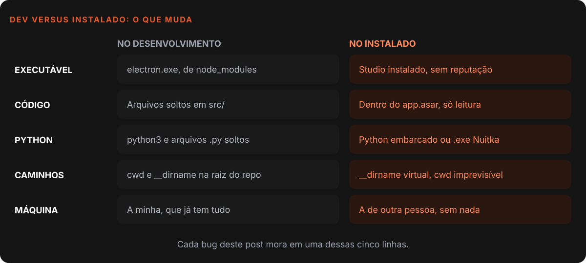
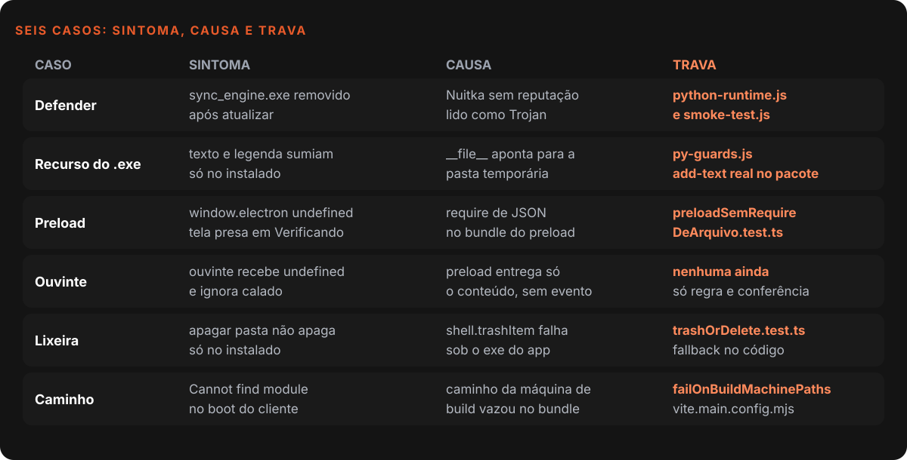
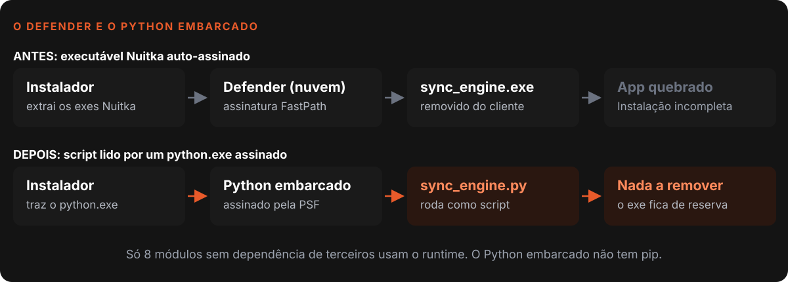
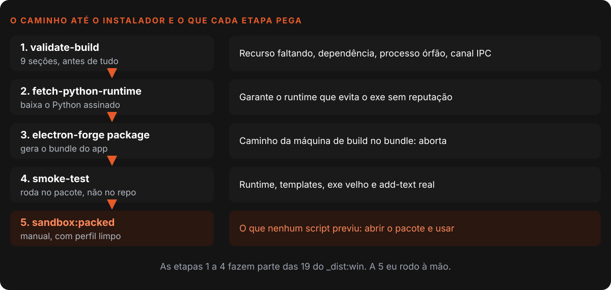

Nardoto
NardotoBugs que só aparecem no computador do cliente
Seis bugs do Nardoto Studio que funcionavam em desenvolvimento e quebravam no instalador, e a trava (teste, guard ou build) que impede cada um de voltar.

"Na minha máquina funciona" é a frase mais cara do desenvolvimento de software, e eu a disse muitas vezes. O Nardoto Studio é um app Electron que escrevo quase todo com IA, e a IA testa no modo de desenvolvimento, que por definição não prova nada sobre o instalador.
Este post conta seis bugs que só existiam fora do meu computador, o que doeu em cada um e a trava que passei a exigir para que não voltem. Um sétimo caso, o do executável do Studio que não era Node, está no post sobre o chat pilotando o app com MCP, e não vou repeti-lo aqui.
O que o código diz hoje (29/10/2026)
- O
validate-build.jstem 867 linhas e 9 seções de checagem, em 21 commits desde 05/03/2026.- O comando que gera o instalador do Windows (
_dist:win) encadeia 19 etapas, e a primeira é o validate-build.- O repositório tem 578 arquivos de teste unitário. Cinco dos seis casos abaixo ganharam um teste ou um guard próprio.
Por que o desenvolvimento não prova nada
Desenvolvimento e instalado são dois ambientes rodando o mesmo código. As diferenças que importam cabem em uma tabela.

No instalado, o código vive dentro de um app.asar somente leitura, o __dirname aponta para um caminho virtual e o executável é o do próprio produto, sem reputação. Depois do bug de lixeira (caso 5), escrevi uma skill de 138 linhas com sete classes de divergência e um checklist obrigatório para quem mexe em arquivos, processos ou caminhos. A regra que mais uso: "funciona no npm start" não é evidência.
Os seis casos

1. O Defender que removia o executável
Os módulos Python do Studio eram compilados com o Nuitka em executáveis auto-assinados. Em julho de 2026, um usuário atualizou o app e recebeu "Instalação incompleta", sem saber que o Windows Defender estava ativo.
O relatório de diagnóstico, rodado no computador dele, mostrou o motivo: o Defender classificou o executável como Trojan já na extração do instalador e o removeu, no mesmo instante do erro. Era um falso positivo. O que mais doeu: a detecção varia por máquina. Os mesmos bytes eram marcados no computador dele e passavam limpos no meu, então recompilar não resolve e testar localmente não prova nada.
A saída foi tirar o binário sem reputação do caminho. Os 8 módulos que usam só a biblioteca padrão passaram a rodar como scripts .py por um Python embarcado, o pacote oficial assinado pela Python Software Foundation 3. O executável Nuitka ficou de reserva para os módulos com dependências de terceiros.

A armadilha é que o embarcado não tem pip. A lista STDLIB_ONLY, em src/ipc-handlers/python-runtime.js, avisa para ninguém acrescentar módulo sem conferir os imports, e tests/unit/python-runtime.test.ts garante que content_creator e outros com dependências ficam de fora. A segunda trava está no smoke-test.js: sem python.exe e sem o ._pth apontando para os scripts, o build é bloqueado. Sem isso, a correção viraria uma volta silenciosa ao executável problemático. Limite honesto: o app ainda leva 14 executáveis compilados.
2. O __file__ que apontava para a pasta errada
Em 16/07/2026, animações e legendas sumiram, mas só no instalado. O capcut_editor procurava a pasta templates/ a partir de __file__. No Nuitka em modo onefile, esse valor aponta para a pasta temporária onde o executável se extraiu, e lá não existe templates/.
A correção foi um resolvedor duplo: __file__ em desenvolvimento e sys.argv[0] (o .exe real) no instalado. A trava veio no dia seguinte, em scripts/py-guards.js (193 linhas), com dois guards.
O primeiro roda o capcut_editor.exe do pacote contra um projeto falso e exige que o arquivo salvo contenha o texto e a animação. O programa engole a exceção, imprime o erro e sai com código 0, então o código de saída não prova nada. O segundo cobre um buraco do build: o script de compilação só compara a data do .py de topo com a do .exe, e mudar um módulo interno não dispara recompilação. O guard monta o grafo de imports e acusa o executável velho.
3. O preload que morria calado
Em 24/09/2026, numa instância isolada de desenvolvimento, window.electron ficou undefined e a tela de Conexões ficou em "Verificando..." para sempre. Uma sessão de IA diagnosticou um problema de contextIsolation e recomendou mudar o getIpc. Estava errada.
A causa provada: o preload.js fazia require de um JSON do projeto. O bundle do preload não leva o arquivo, o carregamento falha com "Unable to load preload script" e nada é exposto. A documentação do Electron avisa que o require do preload sandboxed só carrega o próprio electron 1. Um instalador assim sairia com o Studio inteiro sem IPC.
Troquei o require por uma lista literal e criei tests/unit/config/preloadSemRequireDeArquivo.test.ts (24 linhas). Ele proíbe require de JSON no preload e confere a lista literal contra o catálogo real, para as duas não divergirem.
4. O ouvinte que recebia o conteúdo no lugar do evento
Em 25/10/2026, o controle pelo celular inteiro não reagia no app real, com mais de cem testes passando. O on do nosso preload faz (_event, ...args) => callback(...args): entrega só o conteúdo. A API do Electron entrega listener(event, ...args) e pede justamente para não expor o evento ao renderer 2. Um ouvinte escrito como (_e, payload) recebia o conteúdo em _e, payload ficava undefined e o código ignorava calado.
Os testes passavam porque os mocks de IPC entregavam (evento, conteúdo), o formato da documentação, e não o do nosso preload. Só o app real achou o erro. Corrigi três arquivos com o padrão tolerante (...a) => fn(a.length > 1 ? a[1] : a[0]).
Este é o único caso sem trava automática. A regra é de processo: o mock precisa imitar o preload real, e funcionalidade com IPC novo só está pronta depois de conferida no app.
5. A Lixeira que não apagava
Em 19/06/2026, apagar uma pasta funcionava em desenvolvimento e não fazia nada no instalado. O shell.trashItem usa uma API COM do Windows que falha quando o app roda com o executável do próprio produto, e também rejeita o separador /.
O helper trashOrDelete (src/utils/trashOrDelete.js) normaliza o caminho, tenta a Lixeira primeiro e, se ela falhar, apaga de forma definitiva, devolvendo { trashed } para a interface poder avisar. O custo é real: nesse caminho a ação deixa de ser reversível. Aceitei porque a pessoa já confirmou que quer apagar. O teste tests/unit/utils/trashOrDelete.test.ts injeta uma lixeira que falha e confere que a pasta some do disco.
6. O caminho da minha máquina dentro do bundle
Este bug voltou várias vezes: o instalado morria no boot com "Cannot find module" apontando para a pasta de build da minha máquina. O alias que troca módulos por stubs gerava um caminho absoluto, e o teste de "import de pacote" do plugin, /^[^./\0]/, aceitava C:\... como pacote, porque começa com a letra C. O require ficou literal no bundle.
Corrigi o teste com isAbsolute e, dessa vez, adicionei a trava. O plugin failOnBuildMachinePaths(), em vite.main.config.mjs, varre cada trecho do bundle e aborta o build se encontrar o caminho da pasta de build em qualquer das três formas de escrita. Validei comentando a correção: o build falhou.
Dois outros ficaram só como regra: o SDK firebase/storage falhando no app empacotado (a saída foi a URL assinada do backend) e, no Nardoto IDE, um disco cheio que fez o Chromium recriar o localStorage vazio.
A pilha de travas, na ordem

A quinta etapa, npm run sandbox:packed, existe desde 18/06/2026: o app sobe com um perfil de usuário isolado (NARDOTO_USER_DATA), simulando uma máquina nova sem VM. Ela não exercita o instalador em si, mas pega o "Cannot find module" clássico. O terminal do editor exporta ELECTRON_RUN_AS_NODE=1, que faz o Electron rodar como Node puro e sabota o teste de janela; o script limpa essa variável do ambiente do filho (a história da variável está no post do MCP).
Uma lição de diagnóstico veio do Lore, outro app meu: uma tela preta que bissectei com git stash e deu falso positivo duas vezes, porque eu testava logo depois de matar processos. Medi a RAM livre, não o código. Antes de bissectar um "não abre", meça a memória e conte os processos. Como guardo essas notas está no post sobre memória, skills e regras.
O que eu levaria para qualquer projeto
- Todo bug de instalador vem com uma trava. Teste, guard ou etapa do build. Sem trava, o bug volta com outra cara.
- Exit code não prova nada. Confira o efeito (o arquivo gravado), não o "sucesso" do programa.
- O mock precisa imitar o ambiente real. Um mock "como a documentação diz" enganou mais de cem testes.
- Desconfie do diagnóstico de outra IA. Meça a causa antes de aplicar a recomendação.
- Reputação é parte do ambiente. Um binário sem reputação some no computador de outra pessoa e passa limpo no seu.
- Teste o pacote, não só o repositório. Um perfil limpo vale mais que cem execuções na sua máquina.
Referências
- Electron, Process Sandboxing
- Electron, ipcRenderer
- Python, Using Python on Windows (embeddable package)
Escrito por Tharcisio Nardoto, engenheiro civil e criador do Nardoto Studio.